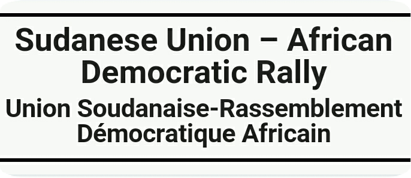
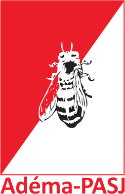
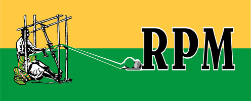

REPUBLIC OF MALI
"One people, one goal, one faith"
FIRST PRESIDENT

- Modibo Keïta
- Political Party S.U.A.D.R.
- In Office From: 20 June 1960.
- In Office until: 19 November 1968 [Deposed]
- Born: 4 June 1915.
- Died: 16 May 1977.
- Aged: 61 years Old.
SECOND PRESIDENT
- Moussa Traore
- Political Party Military; U.D.P.M.
- In Office From: 19 November 1968.
- In Office Until: 26 March 1991.
- Born: 25 September 1936.
- Died: 15 September 2020.
- Aged: 83 years Old.

1st Chairman of the Commission of the African Union
- Amadou Toumani Touré.
- Political Party Military
- In Office From: 26 March 1991.
- In Office Until: 8 June 1992.
- Born: 4 November 1948.
- Died:9 November 2020.
- Aged:72 years Old.
THIRD PRESIDENT

- Alpha Oumar Konaré.
- Political Party ADEMA-PASJ
- In Office From: 16 September 2003.
- In Office Until: 1 February 2008.
- Born: 2 February 1946.
- Aged: 77 years Old.
FOURTH PRESIDENT

- Amadou Toumani Touré.
- Political Party Indipendent
- In Office From: 8 June 2002.
- In Office Until: 22 March 2012 [Deposed].
- Born: 4 November 1948.
- Died:9 November 2020.
- Aged:72 years Old.
Chairman of the National Committee for the Restoration of Democracy and State of mali
- Amadou Haye Sanogo
- Political Party Military
- In Office From: 22 March 2012.
- In Office Until: 12 April 2012.
- Born: ?- ?- 1973 or 1973.
- Aged: 77 years Old.
Acting President
- Dioncounda Traoré
- Political Party ADEMA-PASJ.
- In Office From: 29 October 2014.
- In Office Until: 25 January 2015
- Born: 19 June 1944.
- Aged: 79 years Old.
FIFTH PRESIDENT


- Ibrahim Boubacar Keïta.
- Political Party R.P.M.
- In Office From: 4 September 2013.
- In Office Until: 18 August 2020 [Deposed, then officially Resigned].
- Born: 29 January 1945.
- Died: 16 January 2022.
- Aged: 76 years Old.
lnterim President
- Assimi Goïta
- Political Party Military
- In Office From: 18 August 2020.
- In Office Until: 25 September 2020.
- Born: 22 October 1980.
- Aged: 42 years Old.
lnterim President
- Bah Ndaw
- Political Party Independent
- In Office From: 25 September 2020.
- In Office Until: 24 May 2021 [Deposed].
- Born: 22 October 1980.
- Aged: 42 years Old.
lnterim: incumbent President
- Assimi Goïta
- Political Party Military
- In Office From: 24 May 2021.
- Born: 22 October 1980.
- Aged: 42 years Old.